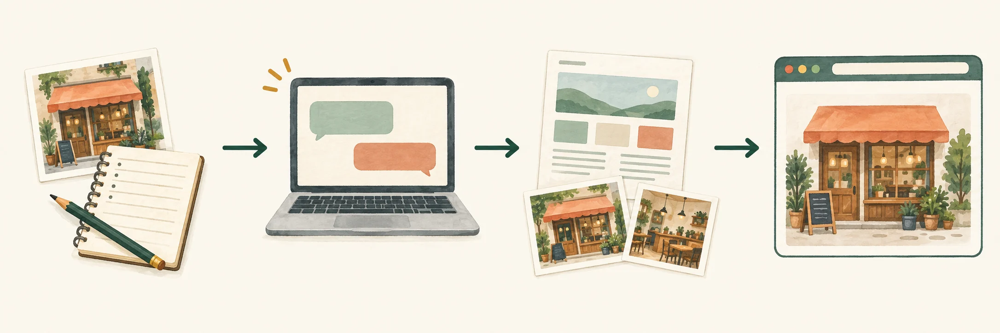

요즘 작은 회사나 가게 홈페이지를 보면 이런 생각이 자주 듭니다. 가게 이름과 영업시간, 서비스 소개, 사진 몇 장과 연락처를 보여주는 홈페이지 하나를 만드는 일이 아직도 수십만 원, 때로는 수백만 원을 들여 업체에 맡겨야만 할까?
처음 만들 때 비용을 내는 것은 그렇다 치더라도 문구 한 줄, 사진 한 장을 바꿀 때마다 다시 제작업체에 연락하고 수정 비용을 내야 합니다. 정작 사장님은 자신의 홈페이지인데도 어디를 어떻게 고쳐야 하는지 모릅니다.
25년 넘게 소프트웨어를 만들어 온 제가 이런 말을 하면 웹사이트 제작을 너무 쉽게 생각하는 것처럼 들릴 수도 있습니다. 하지만 저는 오히려 복잡한 시스템과 단순한 소개 페이지가 얼마나 다른지 잘 알고 있습니다.
회원도 없고 결제도 없고 고객 정보를 저장하지도 않는다면, 그 홈페이지는 시스템이라기보다 인터넷에 걸어두는 작은 간판에 가깝습니다. 그리고 이제 그 정도의 간판은 ChatGPT의 도움을 받아 사장님이 직접 만들어볼 수 있는 시대가 됐습니다.
사업체 정보와 사진이 준비돼 있다면 ChatGPT 데스크톱 앱에서 Codex와 몇 차례 대화를 나누며 화면을 만들고, GitHub 계정 하나로 파일을 보관한 뒤 그 안의 Pages 기능으로 첫 인터넷 주소를 만들 수 있습니다. 상호에 맞는 도메인 연결은 필요해졌을 때 나중에 해도 됩니다. 처음 해보는 분이라면 중간에 한두 번 막히겠지만, 하루 안에 첫 홈페이지를 공개하는 일도 어렵지 않습니다.
이처럼 기본 주소를 쓰는 작은 소개 홈페이지는 GitHub Pages의 무료 제공 범위 안에서 별도 호스팅 비용 없이 운영할 수 있습니다.
소개 사이트와 업무 시스템은 다른 이야기다
제가 여기서 말하는 것은 몇 개 페이지로 이루어진 작은 홍보 웹사이트입니다. 회사나 가게가 무슨 일을 하는지, 어떤 상품과 서비스를 제공하는지, 어디에 있고 언제 문을 여는지, 어떻게 연락하면 되는지를 보여주는 사이트입니다. 전화나 카카오톡처럼 연락 방법을 안내하는 링크도 넣을 수 있습니다.
이런 정보는 방문자마다 달라지지 않습니다. 미리 준비한 글과 사진을 그대로 보여주면 됩니다. HTML과 CSS라는 파일만 있어도 만들 수 있고, 별도의 서버 프로그램이나 데이터베이스도 필요하지 않습니다.
반대로 사이트 안에서 회원가입을 받고 예약과 결제를 처리하거나, 주문·재고·고객 정보를 관리하려면 이야기가 달라집니다. 그때부터는 홈페이지가 아니라 하나의 업무 시스템입니다. 보안과 개인정보 보호, 백업, 장애 대응까지 누군가 책임져야 합니다.
AI가 코드를 만들어준다고 그 책임까지 가져가는 것은 아닙니다.
기준은 의외로 단순합니다. 사람들에게 보여주기만 하면 되는 정보인지, 사이트가 돈과 개인정보를 직접 다뤄야 하는지 먼저 구분하면 됩니다.
GitHub Pages의 공식 소개는 개인·조직·프로젝트를 소개하는 정적 웹사이트입니다. 이 글에서는 가게나 회사의 기본정보를 보여주는 작은 소개 페이지를 그 범위의 예시로 삼습니다. GitHub Free에서는 원본 저장소도 공개여야 하므로, 홈페이지에 올려도 되는 파일만 넣습니다.
반면 GitHub Pages는 온라인 사업, 전자상거래, 거래를 주로 돕는 사이트나 SaaS를 위한 무료 호스팅으로 쓰도록 허용된 서비스가 아닙니다. 그래서 판매·예약 거래의 진행이 주목적인 운영은 이 글의 대상에서 뺍니다. 실제 운영 목적을 기준으로 GitHub Pages 제한을 확인하세요.
처음에는 가게를 소개하는 한 화면이면 충분합니다.
내 정보로 첫 화면을 만들고, 공개 뒤에는 내 컴퓨터와 휴대전화에서 주소를 여는 데 집중해 보세요.
ChatGPT보다 먼저 사장님이 정해야 할 것
ChatGPT에 “세련된 홈페이지를 만들어줘”라고 하면 정말 세련돼 보이는 무언가를 만들어줍니다. 문제는 그 안에 우리 가게 이야기가 없다는 것입니다.
홈페이지에서 가장 어려운 일은 코딩보다 무슨 말을 할지 정하는 일입니다. 이 부분은 AI보다 사장님이 훨씬 잘 압니다. 먼저 다음 내용만 메모장에 적어보세요.
- 상호와 한 문장 소개
- 가장 보여주고 싶은 상품이나 서비스 세 가지
- 주소, 영업시간, 휴무일과 연락처
- 전화, 이메일, 카카오톡 중 원하는 연락 방법
- 로고와 직접 찍었거나 사용할 권리가 있는 사진 몇 장
- 따뜻한 느낌, 믿음직한 느낌처럼 원하는 분위기
- (선택) 기존 인스타그램이나 블로그가 있다면 그 인터넷 주소
이 정도면 시작할 수 있습니다. 로고가 없으면 상호를 글자로 보여줘도 되고, 사진이 부족하면 우선 두세 장으로도 시작할 수 있습니다. 처음부터 완벽하게 준비하려고 하면 홈페이지는 영원히 공개되지 않습니다.
AI가 모르는 가격과 서비스를 그럴듯하게 만들어 넣지 않도록 주의해야 합니다. 고객 명단이나 계약서 같은 내부 자료도 넣을 필요가 없습니다. 홈페이지에 공개할 정보만 전달하면 됩니다.
여기서 쓸 AI는 ChatGPT를 추천합니다. 대화 안에서 홈페이지 배경에 쓸 그림이나 삽화도 만들고 고칠 수 있어, 문구와 이미지를 한 흐름으로 정리하기 좋습니다.
기본 도구는 ChatGPT 데스크톱 앱에서 고르는 Codex입니다. 앱에서 사장님 내 PC에 있는 홈페이지 폴더를 열면 문구, 배경 삽화, HTML 파일을 그 폴더 안에서 만들고 고칠 수 있습니다. 일반 ChatGPT 웹이나 모바일 대화는 이 폴더를 저절로 읽지 않습니다. 문구만 상의할 때는 어디서든 ChatGPT를 써도 좋지만, 실제 파일과 미리보기 작업은 앱의 Codex에서 한다고 구분하면 덜 헷갈립니다.
무료 계정도 그림 만들기와 파일 첨부를 쓸 수 있습니다. 그림과 파일을 여러 번 만들고 고친다면 사용량 한도가 더 높은 ChatGPT Plus가 편합니다. 작은 소개 홈페이지를 만드는 데 Pro가 꼭 필요한 것은 아닙니다. 요금과 포함 기능은 결제 전에 내 계정에 표시된 Go·Plus·Pro 안내를 확인하세요.
가게와 제품, 작업 모습은 직접 찍었거나 사용할 권리가 있는 사진을 씁니다. AI 그림은 홈페이지 위쪽의 배경이나 분위기를 돕는 삽화처럼, 사실을 대신하지 않는 자리에 쓰는 편이 좋습니다.

ChatGPT에는 이 정도로 부탁하면 된다
아래 요청문에서 대괄호 안을 자신의 사업에 맞게 바꿔 넣으면 됩니다. 코드를 만들기 전에 화면의 순서와 문장을 먼저 보여달라고 한 이유는, 틀린 주소와 어색한 광고 문구까지 그럴듯하게 완성되는 일을 줄이기 위해서입니다.
나는 [업종]을 하는 사람입니다.
우리 가게를 소개하는 컴퓨터와 휴대전화에서 모두 보기 좋은 홈페이지를 만들고 싶어.
가게 이름: [상호]
하는 일: [한 문장 소개]
알리고 싶은 것: [상품이나 서비스]
주소와 영업시간: [내용]
연락 방법: [전화 / 이메일 / 카카오톡]
원하는 느낌: [따뜻한 / 차분한 / 믿음직한]
화면 크기에 맞게 글씨와 사진 배치가 자연스럽게 바뀌게 해줘.
없는 내용은 만들지 말고,
먼저 화면에 들어갈 문장과 순서를 보여줘.
내가 확인할 때까지 기다려줘.결과가 마음에 들지 않으면 기술 용어를 사용할 필요도 없습니다. “첫 문장이 너무 광고 같으니 조금 담백하게 바꿔줘.” “나이가 있는 고객도 읽기 편하게 글자를 키워줘.” “메뉴보다 실제 작업 사진을 먼저 보여줘.” 제작업체에 수정 요청을 하듯 이야기하면 됩니다.
한꺼번에 모두 바꾸기보다는 한두 가지씩 바꾸고 그때마다 내 컴퓨터의 미리보기로 확인하는 편이 좋습니다.
문구와 순서가 맞다고 확인한 다음에만 파일을 부탁하면 됩니다.
확인한 문구와 그림으로 홈페이지 파일을 만들고,
컴퓨터와 휴대전화에서 모두 보기 좋게 해줘.
내 컴퓨터에서 미리보기를 열어줘.배경 그림은 앱에서 이어서 만든다
첫 화면의 문장과 순서가 마음에 들면, ChatGPT 데스크톱 앱에서 홈페이지 위쪽에 쓸 작은 배경 삽화를 만들어 볼 수 있습니다.
수선실 홈페이지 위쪽에 쓸 따뜻한 배경 그림을 만들어줘.
바느질 도구를 넣고 글씨는 빼줘.
홈페이지 위쪽에 넣고 컴퓨터와 휴대전화에서 모두 보기 좋게 해줘.
내 컴퓨터 미리보기에 보여줘.더 고치고 싶으면 “조금 더 밝게 해줘”처럼 부탁하면 됩니다. 그림을 정한 뒤에는 Codex에게 그 파일을 홈페이지 위쪽에 쓰고 브라우저 미리보기를 다시 열어 달라고 하면 됩니다. 실제 가게와 제품, 작업 모습은 직접 찍은 사진을 쓰는 원칙은 그대로입니다.
파일을 다른 사람에게 건네야 할 때만 최신 프로젝트를 ZIP으로 따로 백업해 두면 됩니다. Codex와 GitHub 연결을 마친 뒤에는 매번 ZIP을 내려받아 압축을 풀고 다시 올릴 필요 없이, 같은 내 PC에 있는 홈페이지 폴더에서 고친 내용을 확인한 뒤 GitHub에 올려 달라고 요청하면 됩니다.
GitHub Pages에 올리면 주소가 생긴다
이제 홈페이지는 사장님 컴퓨터 안의 프로젝트에 있습니다. 가장 단순한 모습은 폴더 바로 아래에 index.html, images, 필요하면 CSS 같은 정적 파일을 두는 것입니다. ChatGPT가 만드는 방식에 따라 폴더 구조는 조금 다를 수 있지만, 전체적인 모습은 비슷합니다. 화면별 안내가 필요할 때만 따라 해보는 슬라이드를 보조 자료로 열어도 좋습니다.
my-web-site/
├── index.html
└── images/
├── store.jpg
└── product.jpgChatGPT 데스크톱 앱에서 Codex에게 이 프로젝트의 브라우저 미리보기를 열어 달라고 합니다. 사진이 보이는지, 전화 링크와 주소·영업시간이 정확한지 먼저 봅니다. 이 미리보기는 아직 내 PC에서만 확인하는 화면입니다.
첫 공개는 한 번 순서대로 합니다.
- ChatGPT 데스크톱 앱을 설치하고 로그인한 뒤 Codex를 선택하고, 내 PC에 만든
my-web-site폴더를 프로젝트로 엽니다. - 문구를 확인한 뒤 Codex에게 폴더 바로 아래에 홈페이지 파일을 만들고 내 PC 미리보기를 열어 달라고 합니다.
- GitHub에서 사장님 이메일로 계정을 만들고 이메일 확인을 마친 뒤, 내 GitHub 아이디를 정확히 확인합니다. 아이디가
myname이면 홈페이지 주소와 저장소 이름은myname.github.io가 됩니다. 아이디에 대문자가 있어도 저장소 이름은 소문자내아이디.github.io로 씁니다. 같은 이름의 저장소가 이미 있다면 내용을 확인하지 않고 덮어쓰지 않습니다. - GitHub Free에서 Public 저장소를 실제
내아이디.github.io이름으로 만듭니다. 원본 파일은 첫 GitHub 반영부터 누구나 볼 수 있으므로 홈페이지에 공개할 파일만 넣습니다. ChatGPT Pro와 GitHub Pro는 다른 상품이며, 이 과정에 GitHub 유료 계정은 필요하지 않습니다. - 만든 저장소의 HTTPS 주소를 복사해 Codex에게 주고, 이 홈페이지 폴더와 연결해 달라고 요청합니다.
- 첫 반영 전 Codex에게 Git과 GitHub 연결 준비를 확인해 달라고 합니다. 설치가 필요하면 Codex가 여는 운영체제용 공식 안내를 보고 진행하고, GitHub 인증은 브라우저 로그인으로 합니다.
- Codex가 보여준 파일 목록과 내 PC 미리보기를 보고 첫 공개를 허락한 뒤에만 첫 내용을
main에 반영하고 GitHub에 올려 달라고 요청합니다. 빈 저장소에는 이 첫 반영이 있어야 Pages의 공개 원본을 고를 수 있습니다. - 저장소에서 Settings → Pages로 가서 Source: Deploy from a branch, 브랜치
main, 폴더/(root)를 고르고 Save합니다. 이미 그 값이면 바꾸지 말고 확인만 합니다. 배포에는 최대 10분이 걸릴 수 있으니 Actions의 배포 상태를 보고 잠시 뒤 새로고침합니다. 배포가 끝난 뒤 보이는 Visit site에서 실제https://내아이디.github.io주소를 열어 컴퓨터와 휴대전화 양쪽의 글·사진·연락 링크를 확인합니다.
첫 반영 전 준비를 확인할 때는 이렇게 부탁하면 됩니다.
이 컴퓨터에서 첫 GitHub 반영에 필요한 Git과 연결 준비가 됐는지 확인해줘.
없으면 내 운영체제용 공식 설치 안내를 열고 다음 단계만 알려줘.
GitHub 인증은 브라우저 로그인으로 하고, 비밀번호나 개인용 토큰을 채팅에 넣으라고 하지 마.처음부터 공개할 파일을 만드는 요청은 이렇게 짧게 이어갈 수 있습니다.
내가 확인한 문구와 그림, 직접 찍은 사진으로
my-web-site 폴더 바로 아래에 index.html, images 등을 준비해줘.
GitHub Pages에서 바로 열리도록 필요한 설정도 해줘.
컴퓨터와 휴대전화에서 모두 보기 좋게 하고,
내 PC에서 미리보기를 열어줘.
아직 GitHub에 올리지는 마.GitHub와 GitHub Pages 설정은 모두 사장님 계정에서 관리합니다. 로그인, 저장소 공개, 첫 공개 승인은 자동으로 대신 처리되는 일이 아닙니다. 화면을 보고 사장님이 눌러야 할 일입니다.
여기까지면 첫 홈페이지가 완성된 것입니다. https://내아이디.github.io 기본 주소를 컴퓨터와 휴대전화 양쪽에서 열어 글과 사진이 잘 보이고 연락 링크가 제대로 열리는지 확인하세요. 그 주소만으로도 누구에게나 공개하고 공유할 수 있습니다. 별도 도메인을 살 필요는 없습니다. 홈페이지 링크를 등록할 수 있는 업체정보나 SNS 프로필에 이 주소를 넣어 둘 수 있고, 상호에 맞는 더 짧은 주소가 필요해졌을 때만 도메인을 고르면 됩니다.
사진이 보이지 않으면 파일 이름의 대소문자부터 확인해보세요. 내 컴퓨터에서는 Images와 images를 비슷하게 처리하기도 하지만 인터넷 서버에서는 서로 다른 이름입니다. images/photo.jpg처럼 현재 파일을 기준으로 한 상대경로를 쓰면 다른 곳에 공개해도 덜 깨집니다.
수정은 다음부터 더 짧아진다
다음부터는 ChatGPT 데스크톱 앱에서 같은 프로젝트를 열고 Codex에게 한국어로 고칠 내용을 말하면 됩니다. 일반 ChatGPT 웹·모바일 대화가 이 파일을 자동으로 이어받는 것은 아니므로, 실제 수정은 프로젝트를 연 앱에서 진행합니다.
다음 주부터 영업시간을 오후 7시까지로 바꿔줘.
먼저 미리보기 보여주고 내가 확인하기 전 실제 홈페이지에 반영하지 마.미리보기를 보고 맞다고 판단했을 때만 다음처럼 말합니다.
확인했어. 실제 홈페이지에 반영하고 완료 주소 알려줘.권한 연결이 끝난 환경에서는 Codex가 확인된 파일을 main에 반영하고, GitHub Pages가 그 변경을 자동으로 배포합니다. 수정한 화면은 먼저 내 PC에서 확인합니다. 완료는 단순히 저장소에 반영됐다는 뜻이 아닙니다. 실제 https://내아이디.github.io 주소나 연결한 도메인을 컴퓨터와 휴대전화 양쪽에서 열어 바뀐 영업시간, 글과 사진, 연락 링크가 잘 보이는지 확인해야 합니다.
이 글에서 다루는 범위는 여기까지입니다.
결제, 회원가입, 개인정보 수집, 예약·주문 처리는 별도의 업무 시스템입니다. 비밀번호, API 키, 고객 정보처럼 공개하면 안 되는 자료는 프로젝트나 공개 저장소에 넣지 마세요.
도메인 구매처에서 산 도메인을 연결한다
이제부터는 선택 과제입니다. https://내아이디.github.io 주소로 이미 공개와 공유를 할 수 있으니, 도메인은 꼭 필요하지 않습니다. 상호에 맞는 더 짧은 주소를 쓰고 싶어졌을 때 비아웹(Viaweb)이나 가비아(Gabia) 같은 등록기관에서 도메인을 구입해 연결하면 됩니다. 여기서는 도메인만 구매하고, 홈페이지는 이미 GitHub Pages에 올린 상태입니다. 먼저 기본 주소가 컴퓨터와 휴대전화에서 잘 열리는지 확인한 뒤 결정해도 늦지 않습니다.
2026년 9월 확인한 .co.kr·.kr의 1년 신규등록 비용은 비아웹 공개 요금표가 가비아 공개 안내보다 낮아, 여기서는 비아웹을 예로 설명합니다. 비아웹은 1년 11,400원(부가세 별도)이며 연장 비용도 같다고 안내합니다. 결제 전에는 화면에 표시되는 총액과 갱신 조건을 다시 확인하세요.
- 도메인 검색등록 화면에서
www.뒤 검색칸에 예를 들어my-shop을 넣고.co.kr을 골라 검색합니다. - 원하는 이름이 등록가능으로 보이면 그 줄을 고르고 신청하기를 누릅니다. 로그인 화면으로 가면 회원가입 또는 로그인을 마친 뒤 신청을 이어갑니다.
- 화면에 나오는 등록자 정보와 기간을 본인 사실대로 입력하고, 도메인 전체 이름·기간·부가세를 포함한 최종 금액·갱신 조건을 다시 본 뒤에만 결제합니다.
- 결제가 끝나면 도메인 관리 화면에서 보유 도메인이 보이는지 확인합니다. 비아웹 공개 약관은 결제 전에는 이름이 예약되는 것이 아니며, 필요한 신청 정보와 등록비 납부 뒤에 등록이 완료된다고 안내합니다.
가입 후 양식과 결제 화면의 필드·버튼 이름은 계정 종류와 시점에 따라 달라질 수 있으니, 이 글에서 추측해 적지 않습니다.
먼저 GitHub의 사용자 프로필 사진에서 Settings → Pages → Add a domain으로 가서 산 기본 도메인을 추가합니다. GitHub가 보여 주는 실제 TXT 호스트와 값을 Viaweb DNS에 넣고 Verify를 마칩니다. 소유 확인이 유지되도록 TXT 레코드는 지우지 않습니다. 이 단계는 저장소의 Settings와 다른, 도메인 소유 확인 단계입니다.
그다음 홈페이지 저장소의 Settings → Pages → Custom domain에 www.example.com을 넣고 Save합니다. Viaweb에서 도메인의 권한 있는 네임서버를 사용 중이라면 공개 메뉴상 도메인 → 부가서비스 → 고급네임서버관리로 들어갈 수 있습니다. DNS를 다른 업체에서 관리한다면 그 업체에서 설정하고, 이미 쓰는 도메인의 메일용 MX·TXT 레코드는 한꺼번에 바꾸지 않습니다.
www 주소는 다음처럼 연결합니다. 값에는 실제 GitHub 아이디를 쓰고, https://나 뒤의 경로는 붙이지 않습니다.
종류: CNAME
호스트: www
값: 내아이디.github.ioDNS는 반영까지 시간이 걸릴 수 있습니다. GitHub Pages 화면에서 DNS 확인이 끝났는지 보고, 선택할 수 있게 된 뒤에만 Enforce HTTPS를 켭니다. https://www.example.com이 경고 없이 열리는지 컴퓨터와 휴대전화에서 확인하세요. 저장소 Settings에서 Custom domain을 저장하면 main에 CNAME 파일을 더하는 원격 변경이 생길 수 있습니다. 다음 수정을 Codex에게 맡길 때는 먼저 원격 GitHub의 최신 변경을 받아 CNAME을 유지한 채 고치고 GitHub에 올려 달라고 요청하세요.
검색과 AI에게도 읽기 쉽게 정리한다
SEO는 검색 결과에서 우리 가게를 찾기 쉽게 정리하는 일입니다. GEO는 생성형 AI가 우리 가게의 실제 정보를 이해하고 소개하기 쉽게 정리하는 일이라고 생각하면 됩니다. 둘 다 낯선 비법보다 정확한 상호, 서비스, 위치, 연락처, 읽기 쉬운 제목과 설명, 실제 사진과 자주 받는 질문에서 시작합니다.
Google의 안내도 사람이 읽기에 유용하고 사실에 맞는 페이지를 SEO와 AI 검색의 바탕으로 봅니다. 특별한 AI 파일이나 llms.txt를 꼭 만들 필요는 없습니다. 검색에 나온다고 해서 순위나 AI의 언급이 보장되는 것도 아닙니다.
내 공개 홈페이지 [https://실제-주소]의 SEO, GEO를 점검하고 보강해줘.
실제 화면과 내가 준 사실만 써. 없는 후기, 가격, 경력, 약속은 만들지 마.
컴퓨터와 휴대전화에서 글과 사진, 연락 버튼이 읽기 좋은지도 봐줘.
상호·서비스·주소·영업시간·연락 방법·실제 FAQ가 잘 보이게 다듬어줘.
필요한 sitemap, robots, canonical, 업종에 맞는 Business 구조화 데이터는 파일에 보강해줘.
검색용 수집이 막혀 있으면 알려줘. GPTBot 같은 학습 목적 설정은 지금 값 그대로 두고 바꾸지 마.
먼저 바뀔 내용을 미리보기로 보여주고, 내가 확인하기 전에는 실제 홈페이지에 반영하지 마.
Google Search Console과 네이버 서치어드바이저의 최신 공식 안내를 확인해 한 번에 한 단계씩 알려줘.
막히면 개인정보를 가린 오류 화면을 보고 다음 한 단계만 알려줘.도메인을 연결할 생각이 있다면 먼저 최종 주소를 정한 뒤 검색 등록을 시작하는 편이 덜 헷갈립니다. 도메인이 없어도 실제 https://내아이디.github.io 주소를 그대로 등록할 수 있습니다. 나중에 주소가 바뀌면 새 주소에 맞는 속성과 사이트맵을 다시 등록합니다.
- Google Search Console에서 속성 추가 → URL 접두어를 고르고 실제
https://주소 전체를 넣습니다. 안내가 주는 HTML 태그를 복사합니다. - Codex에게 “이 태그를 바꾸지 말고 폴더 바로 아래
index.html의head에 넣어줘”라고 부탁합니다. 미리보기와 사장님 승인,main반영과 GitHub Pages 실제 배포를 마친 뒤 Search Console에서 확인을 누릅니다. 확인 태그는 지우지 않습니다. - 실제 주소에서
sitemap.xml이 열리는지 확인하고 Sitemaps에 제출합니다. URL 검사 → 실제 URL 테스트 → 색인 생성 요청 순서로 첫 화면을 알릴 수 있습니다. - Search Console의 설정 → Search generative AI에서는 사이트 링크와 콘텐츠를 포함하는 상태인지 확인합니다. 이미 Include 상태라면 그대로 둡니다. 이 설정은 Google 검색의 생성형 기능에 관한 것이며, 모든 AI 서비스나 학습 사용을 한꺼번에 정하는 설정은 아닙니다.
- 네이버 서치어드바이저에서는 웹마스터도구 → 사이트 등록으로 같은 실제 주소를 넣습니다. HTML 태그를
head에 넣어 배포한 뒤 소유 확인을 합니다. - 요청 → 사이트맵 제출에 같은 호스트의
sitemap.xml주소를 넣고, 요청 → 웹페이지 수집으로 첫 화면을 요청합니다. 이후 리포트 → URL 검사에서 주소를 확인합니다. 이 태그도 확인 뒤 지우지 않습니다.
어디까지 직접 하고, 어디서 도움을 받을까
예약, 결제, 회원가입과 개인정보 처리가 들어가거나 검색 노출과 브랜드 이미지가 매출에 큰 영향을 준다면 전문가에게 맡기는 편이 낫습니다. 직접 만드는 데 쓸 하루를 고객과 영업에 쓰는 것이 더 가치 있는 사장님도 있을 것입니다.
저는 전문가에게 돈을 쓰지 말자는 이야기를 하고 싶은 것이 아닙니다. 가게 소개와 연락처를 바꾸기 위해 매번 다른 사람에게 부탁해야 하는 구조가 이제는 꼭 필요한지 묻고 싶은 것입니다.
GitHub 계정과 내아이디.github.io 저장소는 사장님 소유의 파일 보관함이자 실제 홈페이지의 설정 장소입니다. 공개 저장소에 무엇이 들어가는지와 Pages 설정을 사장님이 직접 확인해야 합니다.
직접 만들든 맡겨서 만들든 GitHub 계정과 내아이디.github.io 저장소는 사장님이 가지고 있는 것이 좋습니다. GitHub에는 원본 파일과 수정 기록이 있고, GitHub Pages 설정에서 실제 공개 주소를 관리합니다. 완성된 파일이 어디에 있는지, 어느 부분을 바꾸면 되는지 알아야 합니다. 제작업체가 바뀌었다는 이유로 홈페이지까지 사라지는 일은 없어야 하니까요.
첫 홈페이지가 대단할 필요는 없습니다. 방문한 사람이 여기가 어떤 곳인지, 자신에게 필요한 서비스가 있는지, 어떻게 연락하면 되는지만 알 수 있으면 일단 역할을 한 것입니다. 부족한 내용은 고객의 질문을 들으며 조금씩 고치면 됩니다.
예전에는 작은 홈페이지 하나도 기술을 아는 사람에게 부탁해야 하는 프로젝트였습니다. 지금은 사업을 가장 잘 아는 사람이 AI와 함께 직접 첫 모습을 만들 수 있습니다.
내 사업의 이야기를 내가 고치고, 내가 가진 주소로 세상에 내놓을 수 있게 된 것. 제가 보기에는 제작비가 줄었다는 것보다 이 변화가 더 큽니다.
참고한 공식 안내
- ChatGPT 데스크톱 앱: 설치·로그인·폴더 열기·Codex 선택
- ChatGPT Codex 로컬 환경과 Git 작업
- ChatGPT 이미지 만들기·수정
- ChatGPT Plus 안내
- ChatGPT 무료 계정 안내
- GitHub Pages란 무엇인가 (2026년 9월 10일 확인)
- GitHub Pages 사이트 만들기 (2026년 9월 10일 확인)
- GitHub Pages 공개 원본 설정 (2026년 9월 10일 확인)
- GitHub Pages 사용자 도메인 소유 확인 (2026년 9월 10일 확인)
- GitHub Pages 사용자 도메인 관리 (2026년 9월 10일 확인)
- GitHub Pages HTTPS 보안 (2026년 9월 10일 확인)
- GitHub Pages 제한 (2026년 9월 10일 확인)
- Viaweb 도메인 검색등록
- Viaweb 도메인 비용 안내
- 가비아 .co.kr·.kr 공개 안내
- Viaweb 도메인 등록 약관
- Viaweb 기술 안내: 고급네임서버 관리 흐름
- Google 검색용 AI 기능 최적화 안내
- Google SEO 시작 가이드
- Google Search Console 시작하기
- Google Search Console: 사이트 확인
- Google Search Console: 생성형 AI 검색 설정
- Google Search Console: 사이트맵 제출
- Google Search Console: URL 검사
- 네이버 서치어드바이저: 사이트 등록
- 네이버 서치어드바이저: 사이트맵 제출
- 네이버 서치어드바이저: 웹페이지 수집 요청
- 네이버 서치어드바이저: URL 검사
GitHub Pages 관련 자료 확인일 2026.09.10 · 읽기 자료